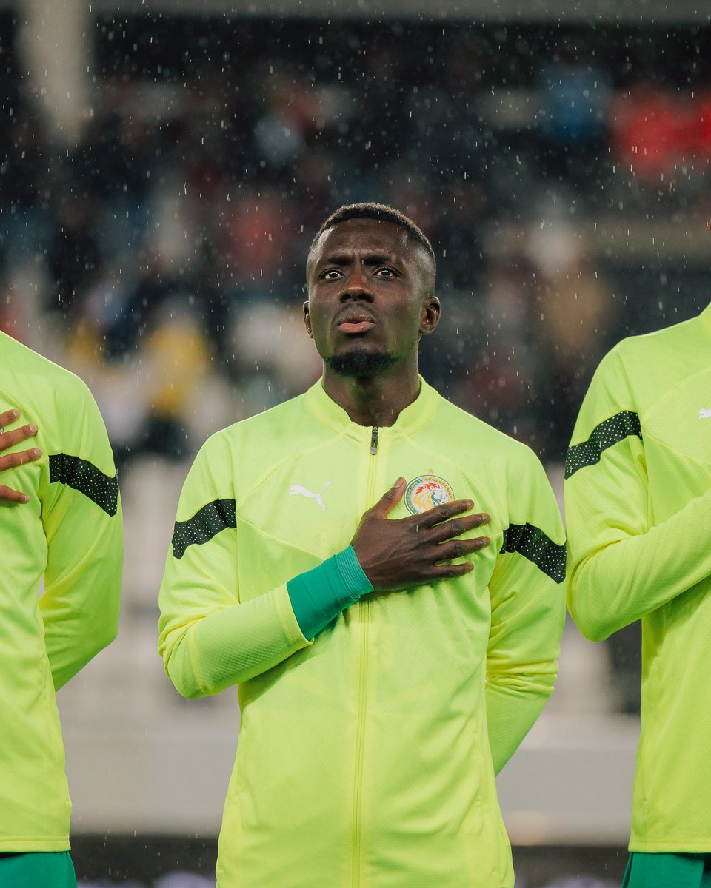
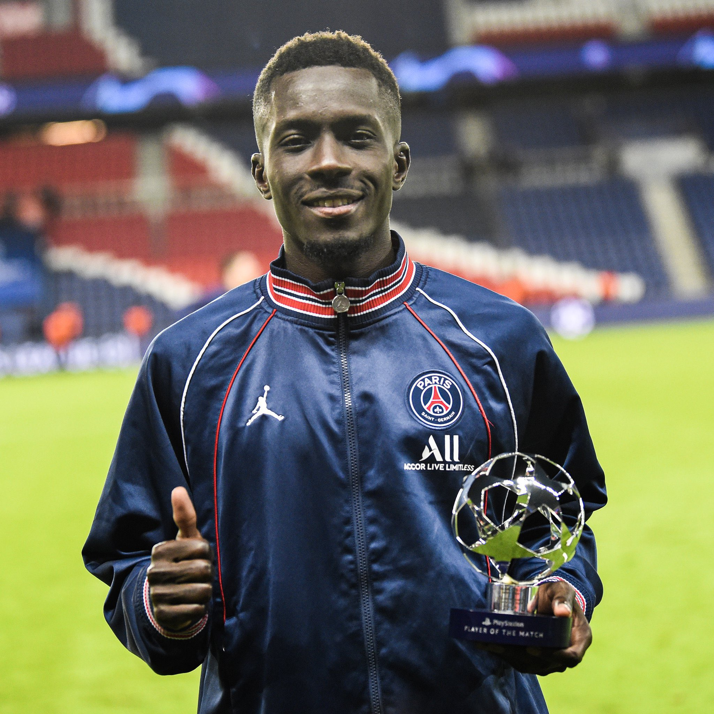
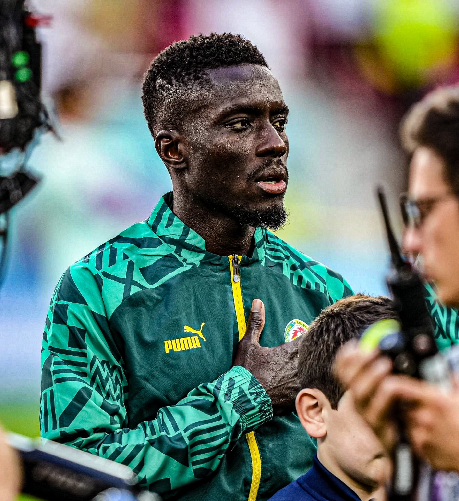
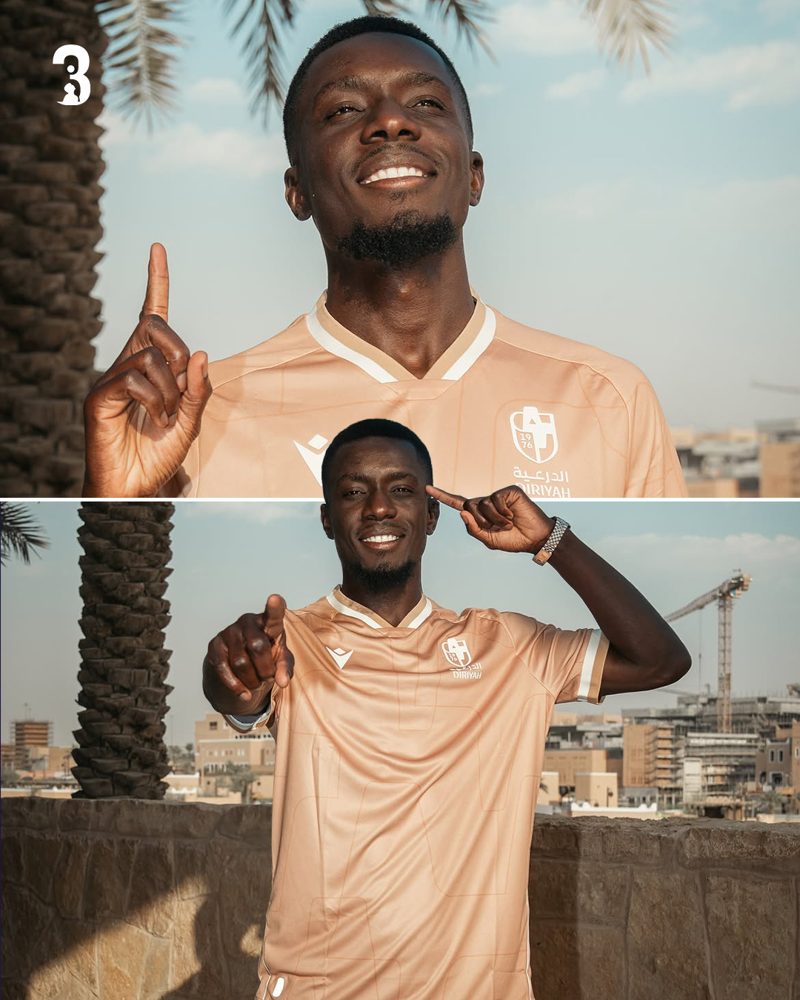
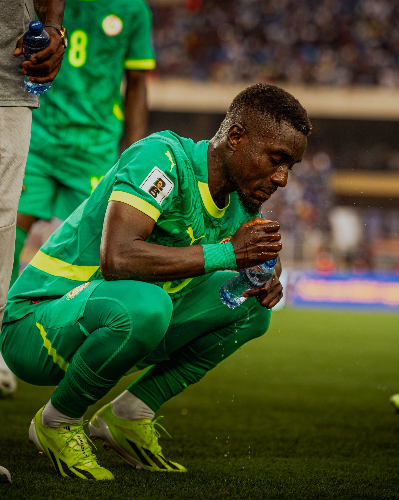
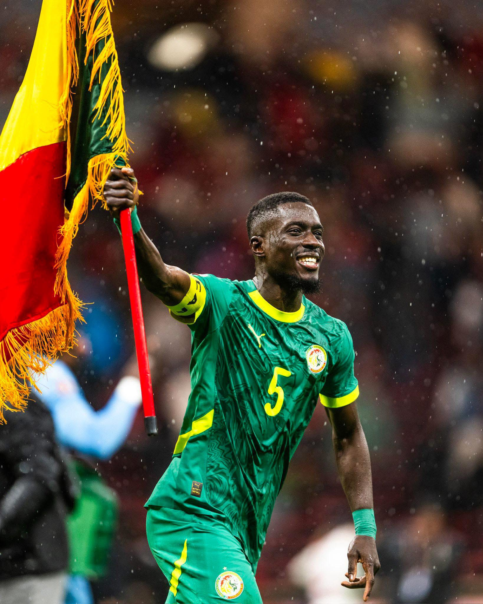

GanaGueye
Milieu récupérateur d'Everton, cadre historique des Lions de la Teranga. Trois fois champion de France, deux fois champion d'Afrique, plus de quatre cents matchs dans les grands championnats européens.

Le récupérateur
1,74 m et 66 kg : un gabarit léger qui compense par le volume de course et la lecture du jeu. En 2024/2025, aucun joueur de Premier League n'a réussi plus de tacles que lui.
Évaluation indicative à valider avec le staff — à remplacer par des données officielles avant publication.
La saison
2025 / 2026
Everton FC — Premier League, avec une parenthèse en janvier pour la Coupe d'Afrique.
Chiffres à rafraîchir en fin de saison
Le parcours
Seize saisons professionnelles, quatre clubs, trois championnats.
Retour à Merseyside en septembre 2022. Élu joueur de la saison du club et des supporters en 2024/2025. Contrat jusqu'en juin 2027.
Transféré pour 30 M€ en juillet 2019. Deux titres de champion de France et une finale de Ligue des champions en 2020.
Premier passage de trois saisons, qui installe sa réputation de récupérateur en Premier League.
Découverte de l'Angleterre après cinq saisons en Ligue 1.
Débuts professionnels et cinq saisons dans le Nord. Champion de France dès 2011.
Formé à l'académie sénégalaise de Saly avant de rejoindre la France.
Lions de la Teranga
Né à Dakar et formé à Diambars, Idrissa Gana Gueye est l'un des piliers les plus durables de la sélection sénégalaise. Il est de toutes les grandes campagnes du pays depuis plus d'une décennie.
En février 2022, il fait partie du groupe qui décroche la première Coupe d'Afrique des nations de l'histoire du Sénégal, face à l'Égypte aux tirs au but.
Quatre ans plus tard, à Rabat, c'est sa passe qui lance Pape Gueye sur le but décisif de la finale. Un second titre continental, avant de retrouver la Coupe du monde en 2026.
Moments clés
Six repères dans une carrière de seize saisons.
Deuxième saison professionnelle et premier titre majeur avec le LOSC Lille, qui réalise le doublé Championnat-Coupe.
Après une saison à Aston Villa, il rejoint Everton et s'y impose comme l'un des meilleurs récupérateurs de Premier League.
Transféré pour 30 M€ à Paris. Trois saisons, deux titres de champion de France et une finale de Ligue des champions en 2020.
Membre du groupe sénégalais sacré champion d'Afrique face à l'Égypte, premier titre de l'histoire du pays.
Élu joueur de la saison d'Everton par le club et par les supporters. Aucun joueur de Premier League n'a réussi plus de tacles que lui cette année-là.
En finale à Rabat, il sert Pape Gueye sur le but de la 94ᵉ minute qui offre au Sénégal son deuxième titre continental.
Le palmarès
Deux titres continentaux avec le Sénégal, au Cameroun puis au Maroc. Passeur décisif sur le but de la finale 2025.
Trois titres de Ligue 1, le premier avec le LOSC Lille, les deux suivants avec le Paris Saint-Germain. Également vainqueur de la Coupe de France.
Distinction décernée par Everton et par ses supporters, à trente-cinq ans.
La galerie
Cinq emplacements calés au format. Ils reçoivent les photos officielles sans retoucher la mise en page.





Médias &
partenariats
Dossier de presse, visuels haute définition et éléments biographiques téléchargeables, mis à jour à chaque fenêtre de transfert.
Espace réservé aux partenaires actuels. Les emplacements accueillent les logos une fois les accords confirmés.
Prendre contact
Les demandes passent par la représentation. Chaque porte mène à la bonne personne.
Sollicitations sportives, dossiers de performance, échanges avec la représentation.
Adresse à renseigner →Demandes d'interview, accréditations, éléments biographiques et visuels validés.
Adresse à renseigner →Marques, équipementiers, opérations d'image et engagements associatifs.
Adresse à renseigner →